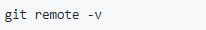

El kernel de Linux es un proyecto de codigo abierto,los cambios en el software se realizaban a través de parches y archivos.
En 2005 la relación entre la comunidad que desarrollaba el software y BitKeeper(DVCS) se vino abbajo y el software dejo de ofrecerse de manera gratuita. Debido a esto,Linus Torvalds decidió crear su propia herramienta usando lo aprendido mientras usaba BitKeeper.
Desde su nacimiento en el 2005, Git ha evolucionado y madurado para ser fácil de usar y conservar sus características iniciales.
GIT es un sistema de control de versiones que nos ofrece grandes ventajas como lo son:
Facilita el trabajo colaborativo
Permite acceder a versiones anteriores de forma rápida y sencilla
Permite etiquetar las versiones del proyecto
Nos permite trabajar desde otro entorno al clonar nuestro repositorio
El uso de branches nos permite trabajar con una base de código paralela al proyecto en sí, donde podemos corregir bugs o desarrollar nuevas características para el producto sin afectar el proyecto principal
El comando git init crea un nuevo repositorio de Git. Puede utilizarse para convertir un proyecto existente y sin versión en un repositorio de Git, o para inicializar un nuevo repositorio vacío.
Ejemplo:
Git status
El comando de git status nos da toda la información necesaria sobre la rama actual.
Ejemplo:
Git branch
El comando git branch te permite crear, enumerar y eliminar ramas, así como cambiar su nombre pero no te permite cambiar entre ramas o volver a unir un historial bifurcado.
Ejemplo:
Git checkout
En términos de Git, "checkout" (extraer) es el acto de cambiar entre diferentes versiones de una entidad objetivo. El comando git checkout opera sobre tres entidades distintas: archivos, confirmaciones y ramas.
Ejemplo:
Git remote
El comando git remote es una parte de un sistema más amplio que se encarga de sincronizar los cambios. Los registros inscritos mediante el comando git remote se utilizan junto con los comandos git fetch, git push y git pull.
Ejemplo:

Git pull
El comando git pull comprueba si hay cambios en el repositorio remoto y, en caso de que los haya, se trae esos archivos a tu repositorio local y actualiza tu espacio de trabajo
Ejemplo:
Git push
El comando git push se usa para cargar contenido del repositorio local a un repositorio remoto. El envío es la forma de transferir confirmaciones desde tu repositorio local a un repositorio remoto.
Ejemplo:
Git clone
El comando git clone se utiliza para fijar como objetivo un repositorio existente con el fin de clonarlo o copiarlo.
Ejemplo:
Git commit
El comando git commit captura una instantánea de los cambios preparados en ese momento del proyecto. Las instantáneas confirmadas pueden considerarse como versiones "seguras" de un proyecto: Git no las cambiará nunca a no ser que se lo pidas expresamente.
Ejemplo: